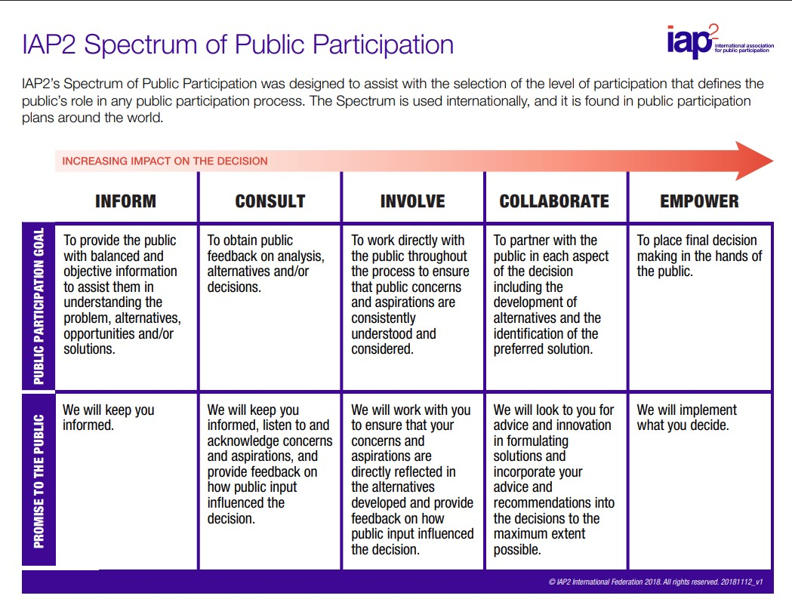

Stakeholder Engagement
Engaging stakeholders is a core part of government communications. It means listening, informing, and working collaboratively with those who are affected by or interested in what we do.
This page provides guidance, models and tools to help government communicators in Tasmania work effectively with stakeholders — whether communities, industry, NGOs or individuals.
Core principles
- Inclusive: Stakeholder engagement should reflect the diversity of our community and actively seek out underrepresented voices.
- Purposeful: Engagement should be designed to inform decisions, not just to tick a box.
- Transparent: Stakeholders should understand the role they play and how their input is considered.
Frameworks and references
In Tasmania, many agencies follow the IAP2 spectrum of public participation, especially for major infrastructure or policy work.
This tool also draws on the UK Government Communication Service (GCS) approach to stakeholder mapping and partnership building.
Read more: GCS Stakeholder Engagement Guide
IAP2 Spectrum
The IAP2 Spectrum of Public Participation is widely used across Australian governments to define the level of engagement with stakeholders. It helps clarify how much influence the public or a group can have on a decision.
Source: iap2.org.au
Stakeholder Tools and Resources
- Stakeholder mapping templates and matrices
- Engagement strategy worksheets and checklists
- Public sentiment and feedback collection tools
- Partnerships & Advocates – working with trusted messengers
All resources are designed to work in no-cost/low-cost environments and can be scaled up or down depending on your team size or reach.
Looking for more help? Visit the Community section to ask questions or share best practice with peers.